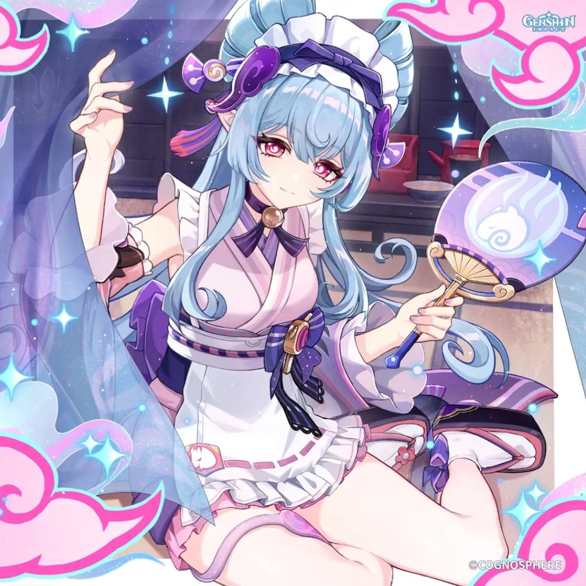

SANDS
Elemental Mastery / ER
GOBLET
Elemental Mastery
CIRCLET
Elemental Mastery

Yumemizuki Mizuki functions as an effortless on-field Anemo catalyst driver built specifically around the Stellar-Swirl reaction framework. Upon activating her Elemental Skill, she enters the floating Dreamdrifter state, auto-firing continuous AoE Anemo bolts that trigger high-frequency Swirls without requiring manual normal attack inputs. When paired with Odette or Cryo Traveler, her Swirls level up into devastating Cryo Stellar Vortex explosions while providing teamwide EM buffs and burst healing.
Elemental Skill (Aisa Utamakura Pilgrimage) is maxed first as it governs her primary Dreamdrifter auto-targeting Swirl damage. Elemental Burst follows for Mini Baku snack healing and shockwaves. Normal Attacks can be left at Level 1 since she cannot use them while floating.
| Stat Metric | Target Threshold | Justification |
|---|---|---|
| Elemental Mastery | 800 ~ 1,000+ | Core scaling foundation; directly dictates Swirl DMG, A2 EM buffs, and Burst snack healing. |
| Energy Recharge | 140% ~ 160% | Ensures Mini Baku Burst availability off cooldown for consistent team healing and snack procs. |
| CRIT Rate | Baseline / 30%+ | Secondary priority unless running Scarlet Proof 4pc or unlocked her C6 Swirl-CRIT passive. |
| CRIT DMG | 100%+ | Supplementary multiplier; prioritize pure EM and ER substats before investing into CRIT stats. |
| ATK | Baseline | Minimal scaling impact; transformative Stellar-Swirl damage formulas strictly favor EM and reaction buffs. |


Substat Priority: Elemental Mastery > Energy Recharge > ATK% > CRIT Rate / CRIT DMG
 Mizuki
Main Driver
Mizuki
Main Driver
 Odette
Odette
 Cryo MC
Cryo MC
 Faruzan
Anemo Shred / Buff
Faruzan
Anemo Shred / Buff
 Qiqi
Qiqi
 Sandrone
Sandrone
Mizuki drives rapid Cryo Swirls under Odette's aura, constantly triggering Stellar Vortex detonations and party EM buffs.
Mizuki
Main Driver
 Furina
Hydro / Buff
Furina
Hydro / Buff
 Mavuika
Mavuika
 Xiangling
Xiangling
 Bennett
ATK Engine / Heal
Bennett
ATK Engine / Heal
Furina and Mavuika supply continuous off-field elemental application for Mizuki to swirl, driving dual Hydro-Pyro reactions.
Mizuki
Main Driver
Furina
 Ineffa
Ineffa
 Ororon
Electro Sub-DPS
Ororon
Electro Sub-DPS
 Fischl
Fischl
 Kazuha
Kazuha
High-frequency Electro-Charged and Swirl discharges with Ororon and Fischl generating continuous particles and reaction ticks.
| Tier | Name | Rating | Combat Mechanics & Pull Value |
|---|---|---|---|
| C1 | In Mist-Like Waters | ★★☆ | Applies Twenty-Three Nights' Awaiting every 3.5s; triggering Swirl consumes it to buff that Swirl instance by 1,100% of Mizuki's EM. |
| C2 | Your Echo I Meet in Dreams | ★★★ (KEY SPIKE) | While in Dreamdrifter state, every 1 point of EM increases all party members' Pyro, Hydro, Cryo, and Electro DMG Bonuses by 0.04% (up to +40% at 1,000 EM). |
| C3 | Till Dawn's Moon Ends Night | ★★☆☆ | Increases Elemental Skill (Aisa Utamakura Pilgrimage) Level by 3. |
| C4 | Buds Warm Lucid Springs | ★★☆ | Special Snacks deal damage and heal simultaneously regardless of HP thresholds, restoring 5 Energy to Mizuki (up to 20 Energy total). |
| C5 | As Setting Moon Bring Year's End | ★★☆☆ | Increases Elemental Burst (Anraku Secret Spring Therapy) Level by 3. |
| C6 | The Heart Lingers Long | ★★★★ (WHALE) | While in Dreamdrifter state, Swirl DMG dealt by nearby party members can score CRIT hits (fixed at 30% CRIT Rate / 100% CRIT DMG). |
Yumemizuki Mizuki brings unparalleled ease of use to Anemo driving and Swirl teamcrafting in Version Luna V. Operating as a hybrid EM buffer, sustained healer, and auto-targeting catalyst driver, her synergy with the 7.0 Stellar-Swirl reaction framework and the Scarlet Proof artifact set establishes her as an elite pickup and a rewarding 50/50 standard banner pull.